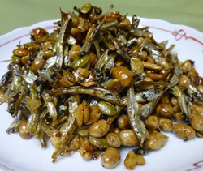

大豆とごまめの甘辛田作り
- 調理時間：20 分
- （一人当たり）
- カロリー：201kcal
- たんぱく質：11.5g
- 脂質：5.7g
- 塩分：1.2g

＜作りやすい分量＞
- ごまめ
- ５０ｇ
- 煎り大豆
- ２０ｇ
- 煎りごま
- ５ｇ
- ミックスナッツ
- ２０ｇ
- 醤油
- ２０ｍｌ
Ａ
- ・酒
- １００ｍｌ
- ・砂糖
- ４０ｇ
- ・みりん
- ５０ｍｌ

- フライパンにごまめを入れて、弱火にかける。焦がさないように全体を箸で混ぜながら４～５分煎って乾燥させる。
※冷めた時に手でパキッと折れるのが理想。 - 鍋にＡを合わせて火にかけ、泡が高くまで膨れ上がったら、すぐ醤油を加える。茶色い泡が再び膨れ上がったら、①のごまめと煎り大豆を加えて手早く混ぜる。
- 大きめの平らな容器に広げ、煎りゴマや、好みでローストしたミックスナッツを振って冷ます。
大豆とごまめの甘辛田作り
「田作り」とは、片口イワシを乾燥させたごまめを醤油、みりん、砂糖などで甘辛く炊いたお料理です。五穀豊穣の願いをこめて「五万米」という字で表すこともあり、関東ではおせち料理に特に欠かせない３種の祝い肴のひとつです。
節分で行う豆まきも新たな年を迎える習わしのひとつ。季節の変わり目に生じるとされた邪気＝鬼を追い払い身を清めます。
今回のレシピは節分にまかれる豆とおせち料理にも作る田作りを一緒にいただけます。カルシウムや鉄分が豊富なので小さな子どものおやつにおすすめです。